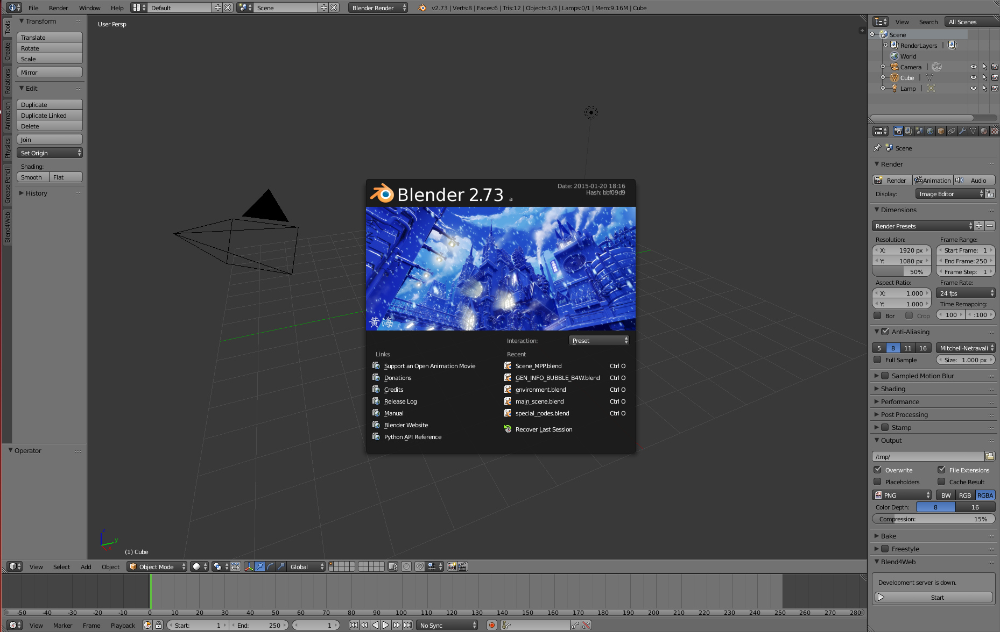

Quick Install¶
Quick install of the Blend4Web addon suits Blender artists who have no need in full-scale 3D applications development. In this case the main benefit is the opportunity to export a scene into a single HTML file for viewing in WebGL-capable browsers.
For more serious tasks an SDK setup is required.
Installing Blender¶
Authoring 3D scenes is carried out directly in Blender which is open source software and is distributed free of charge.
A current stable version of Blender should be used. It can be downloaded from the official site.
Installing the Addon¶
Run Blender, load the default scene File > New. Open the user preferences File > User Preferences.... Under the Addons tab click Install from File... and then select the zip archive with the addon files. After that turn on the Import-Export: Blend4Web checkbox.

Then click Save User Settings and close the user preferences window.

{kind=link}
Exporting and Viewing Scenes¶
The created scenes can be exported in HTML format. To do this use the File > Export > Blend4Web (.html) menu option and choose the export filepath. The resulting HTML file can be opened with any browser with WebGL support.
See also
Upgrading the Addon¶
To upgrade the addon first disable the old version and then remove it.
To disable the addon: run Blender, load the default scene File > New. Open the user preferences File > User Preferences.... Go to the Addons tab and choose the Import-Export category. Disable the Import-Export: Blend4Web checkbox. Then click Save User Settings and restart Blender.
Then to remove the addon open the user preferences window again, expand the Blend4Web info panel and click the Remove button.
{kind=link}